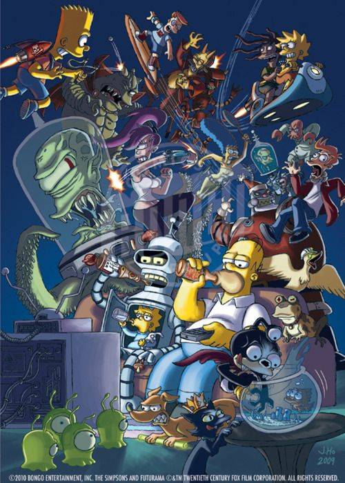

Datos CuriososDe La Familia Simsons
1. Homero nació en 1956, según lo que dice su licencia para conducir. Esto significa que actualmente tiene 63 años.
2. Kang y Kodos, los dos alienígenas, tienen nombres inspirados en Star Trek: The Original Series.
3. Nelson tiene en realidad 3 hermanos, esto incluye a su medio hermano Norman
4. El apellido de Ned Flanders está inspirado en el nombre de una de las calles en donde vivió Matt Groening.
5. Y hablando de Matt Groening, creador de la serie, sus iniciales se pueden apreciar en el perfil de Homero, en donde su cabello forma una “M” y su oreja una “G”
6. Lisa está inspirada en la hermana de Matt Groening, quien actualmente está casada con Craig Barlett, creador de otras caricaturas clásicas como Hey, Arnold! y Rugrats, las cuales puedes disfrutar en Claro video y revivir esos bellos recuerdos de la infancia.
7. El abuelo Simpson vendió su casa para ayudar a Homero a comprar la suya.
8. A lo largo de la serie, sólo una vez se ha escuchado hablar a Maggie, y fue en el capítulo “La primer palabra de Lisa”, en donde Maggie llamó “papi” a Homero cuando nadie escuchaba.
9. La apariencia de Otto está inspirada en Slash, guitarrista de Guns N’ Roses.
10. Marge es una gran fan de The Beatles, su favorito es Ringo Starr.

Series De Matt Groening
1. Futurama
2. (Des)encanto
3. Padre De Familia
4. El Show De Cleveland
5. Bob's Burger
6. Solar Opposites
7. Bojack Horseman
8. Rick y Morty
9. Big Mouth
10. Final Space
11. South Park
12. The Midnight Gospel